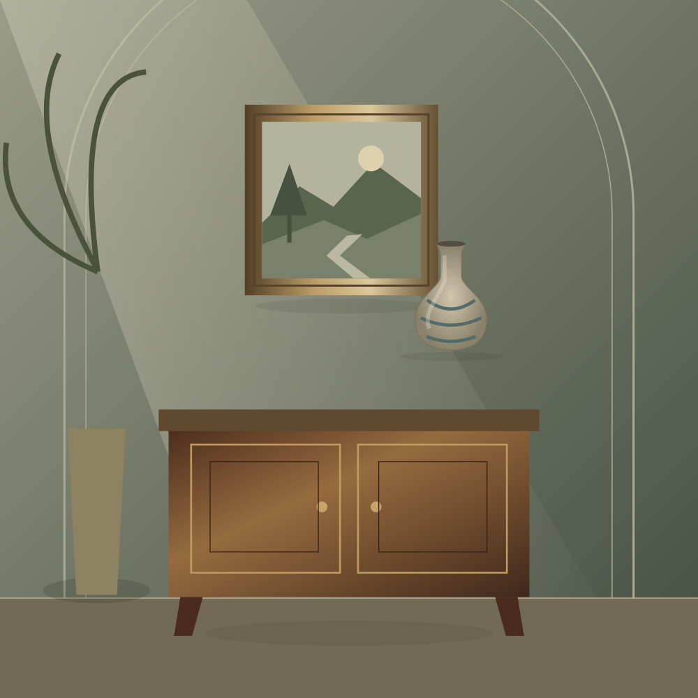

ARTE · ANTIQUARIATO · OGGETTI D'AUTORE
Il tempo,
ritrovato.
Oggetti che hanno attraversato le epoche.
In attesa di entrare nella tua storia.
Uno sguardo nuovo sul patrimonio europeo.

THE ART OF FINDING SOMETHING TIMELESSVOL. 01 / EUROPAUna selezione senza confini✧Il carattere dei pezzi unici✧Un dialogo prima dell'acquisto
IL PIACERE DELLA SCOPERTA
Storie da collezionare.
Forme, materiali e dettagli
che resistono al passare del tempo.
Nessun oggetto trovato. Prova un'altra ricerca.
IL NOSTRO APPROCCIO
Il valore è
nei dettagli.
Un incontro tra la curiosità di chi cerca e la storia di ogni oggetto. Un percorso accompagnato, dalla scoperta alla richiesta di acquisto.
- 01
Scopri
Esplora per categoria, paese e stile. Conserva nei preferiti ciò che ti ispira.
- 02
Approfondisci
Richiedi conferma di disponibilità, condizioni e documentazione del pezzo.
- 03
Decidi con calma
Ricevi un preventivo con venditore, costi e trasporto prima di assumere impegni.